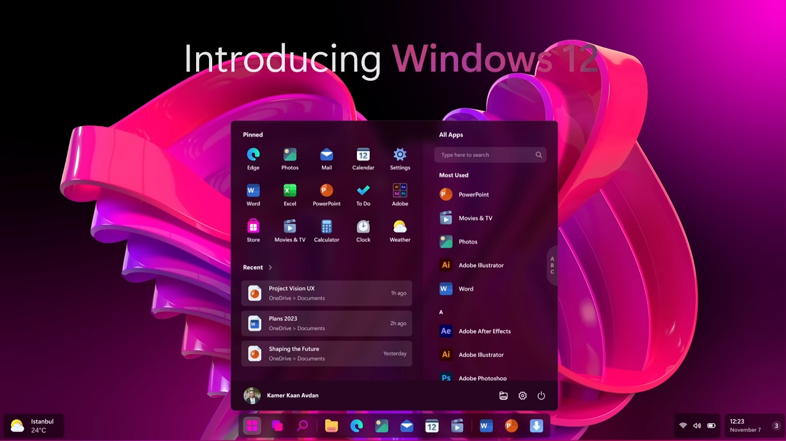

Windows 12 se filtra con diseño renovado
Una filtración reciente ha revelado el diseño de Windows 12, que incluye funciones potenciadas por IA. El nuevo sistema operativo promete un menú de inicio flotante y una interfaz más moderna.
Nuevas funcionalidades
Windows 12 integrará IA para optimizar tareas diarias, como la gestión de ventanas y la búsqueda de archivos...
Fecha de lanzamiento
Aún no hay una fecha oficial, pero se espera que Windows 12 llegue a finales de 2025.